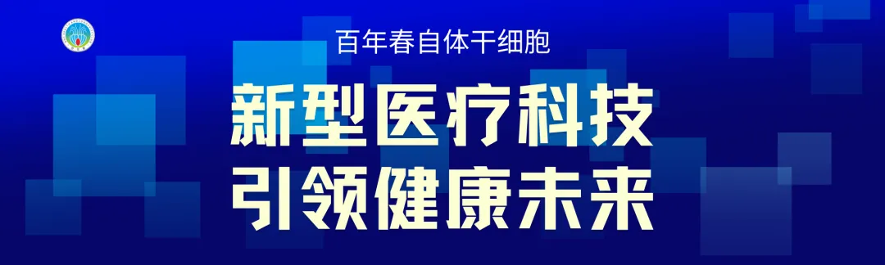
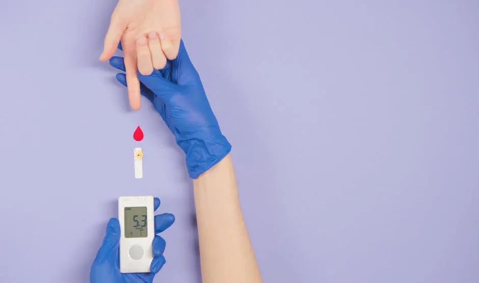

年后肝"负重"？百年春护肝美颜能量抗衰老针——给肝"松绑"，让脸发光！
2026-03-01

About Us
关于百年春

一、人生循环：拿认知换钱、拿钱换命
巴菲特曾说过“如果没有找到一个当你睡觉时还能挣钱的方法你将一直工作到死”
甚至还有这样一句箴言：“人生最可靠的三件事是：钱、健康和认知。”
没错，大部分普通人都接触不到顶级的医疗手段，如果你已经了解到的话，那么富人已经在这个领域深耕或者产生了不小的影响力。
二、打破固有认知
目前全球的糖尿病患者持续性的不断飙升。但我们对于其发病的机制却仍然缺乏深入且具体的认识，糖尿病是一个多机制引起的疾病，不同类型其病因不尽相同，即使在同一种类型中也存在着异质性，因此，目前糖尿病仍是医学界难以跨越的‘高峰’，无法治愈。
长期服用药物、注射胰岛素并配合血糖监控是必须的治疗手段。
然而，过程痛苦且数不清的并发症。因此，科学家们一直在尝试能够替代胰岛素注射的治疗方案。
近年来，随着细胞疗法在糖尿病领域研究的不断深入，医学界开始意识到糖尿病摆脱胰岛素依赖，实现彻底治愈并非不可能！
三、全球首款用于治疗Ⅰ型糖尿病的细胞疗法获FDA批准上市
2023年6月28日
美国时间6月28日，CellTrans公司的细胞治疗药物Lantidra获美国食品药物监督管理局（FDA）批准上市，这是首个供体来源的胰岛细胞制成的同种异体（供体）胰岛细胞疗法，用于治疗Ⅰ型糖尿病。
Lantidra细胞疗法不同于传统的药物治疗，它通过胰岛细胞移植的方式，为患者提供持续稳定的胰岛素供应。这种疗法就像是为患者的身体安装了一个“内置的胰岛素工厂”，使他们能够重新获得血糖控制的主动权。
Lantidra细胞疗法的安全性，在经过严格的临床试验和FDA的审查后，已得到了初步验证。
在这些研究中，共有30例1型糖尿病合并无意识低血糖的受试者接受了治疗。结果显示，虽然部分患者出现了不良反应（其不良反应最常见的不良反应是恶心、疲劳、贫血、腹泻和腹痛），但大多数都属于可控范围。
其中，有21名参与者在接受治疗后的1年或更久时间内，不需要使用胰岛素，显示了治疗的显著效果。
四、更多关于干细胞治疗糖尿病的案例分享
案例一：
背景信息：
患者：胡某
病程：
·胰腺全切后继发糖尿病，空腹血糖15mmol/L；
·继发糖尿病肾病，肾衰竭阶段，蛋白尿；
·免疫力差、经常性感冒；体力、精力下降急剧，不能正常工作；
治疗过程：
·在百年春自体干细胞健康管理医学中心治疗；
·第一次回输：体力、耐力、精力增强，睡眠质量增强；
·第二次回输：血糖下降提高明显, 空腹血糖6.5mmol/L，不需要再使用外源性胰岛素；
·第三次回输：检查发现肌酐恢复正常，脱离透析，但仍有少量蛋白尿；
·目前血糖恢复正常，不需要使用外源性胰岛素，肌酐恢复正常，不需要继续透析。
案例二：
背景信息：
患者：李某
病程：
·患有糖尿病9年
·眼睛肿胀等视网膜病变、腿脚发凉、血压不稳定、体重下降等
治疗方法尝试：
·国内外各种偏方，花费上百万，效果甚微
治疗过程：
·遭遇严重车祸，血糖飙升至711毫克/分升（超过800毫克/分升即有死亡风险）
·在北京航天中心医院接受治疗，注射胰岛素后血糖降至380毫克/分升（仍严重超标）
·接受自体外周血干细胞移植技术治疗，药物刺激生成新干细胞，修复损坏的胰腺细胞
治疗结果：
·胰腺器官能够自己分泌胰岛素，无需再注射外界胰岛素
·几十例临床病患均未出现胰腺炎等后遗症和不良反应
案例三：
背景信息：
患者：张大爷
病程：
·患有糖尿病25年，已发展为终末期糖尿病肾病（尿毒症）
治疗方法尝试：
·在上海长征医院接受自体再生胰岛移植治疗
·肾移植手术，但术后血糖控制不良，需注射大量胰岛素并服用多种降糖药物
治疗过程：
·接受自体再生胰岛移植治疗
·干细胞来源的再生胰岛组织代偿胰岛功能损失，逆转高血糖并实现功能性治愈
治疗结果：
·摆脱胰岛素和口服降糖药物
·肾脏功能恢复正常

五、细胞治疗将成为治疗慢性疾病的有力武器
细胞疗法在糖尿病治疗领域的潜力远不止于此。随着研究的深入和技术的不断进步，我们有理由相信未来会有更多基于干细胞的治疗方案问世。这些干细胞具有自我更新和分化成各种细胞类型的能力，它们将成为我们治疗糖尿病等慢性疾病的有力武器。 在这场细胞疗法的革命性突破中，我们见证了医学的进步和生命的奇迹。未来，让我们共同期待更多这样的突破，为糖尿病患者带来更加健康、自由的生活。 |